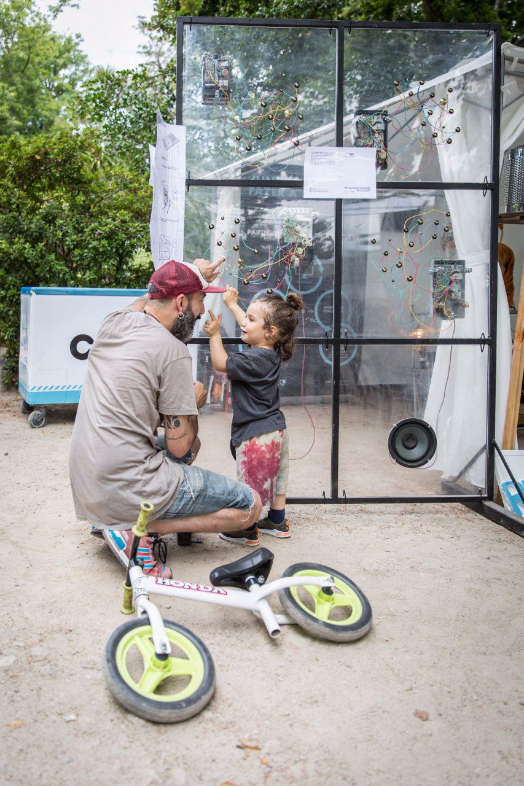
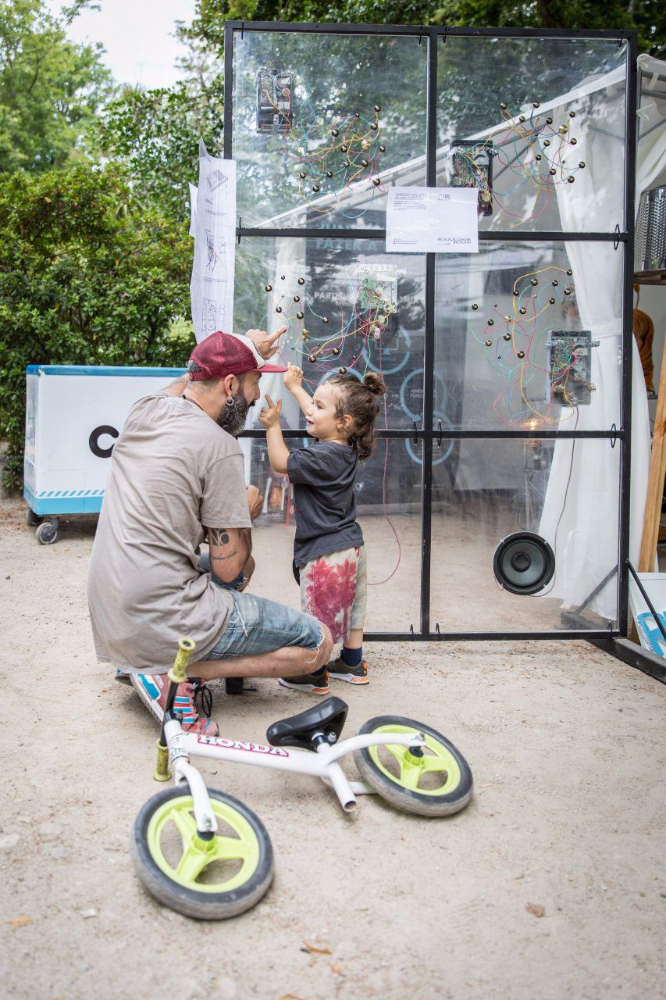

E-waste Panel
The interior of commercial electronic products is made in a specialized way and is usually little or nothing perceptible to its user/consumer, being comparable to a black box, about which it knows little or nothing. The hardware present in these systems, although belonging to a territory specialized in electronics, can be manipulated and transformed in a handcrafted way through the strategies of hardware hacking and circuit bending. In these practices, the interior of electronic devices is seen as a support for creative exploration, just like a canvas for painting, new discourses and aesthetic possibilities are created through immediate contact with the hardware, breaking, modifying and reinventing the original function of technological systems.
In the format of a sound installation, we invite the public to explore the range of sounds resulting from the exploratory hacking of discarded electronic devices, participating in the manipulation and sound composition of objects through the touch of the skin. The interaction can be carried out individually or with more than one user at the same time, and can be manipulated together with other people, through the creation of bridges of electricity connection between the bodies, thus originating a collaborative sound improvisation.
Sound Installation created from electronic waste
comissioned by LIPOR (Porto's Inter-municipal Waste Management Service) and ERP Portugal
presented at SoundPrimavera Festival and CidadeMais Festival, Porto 2019
 
